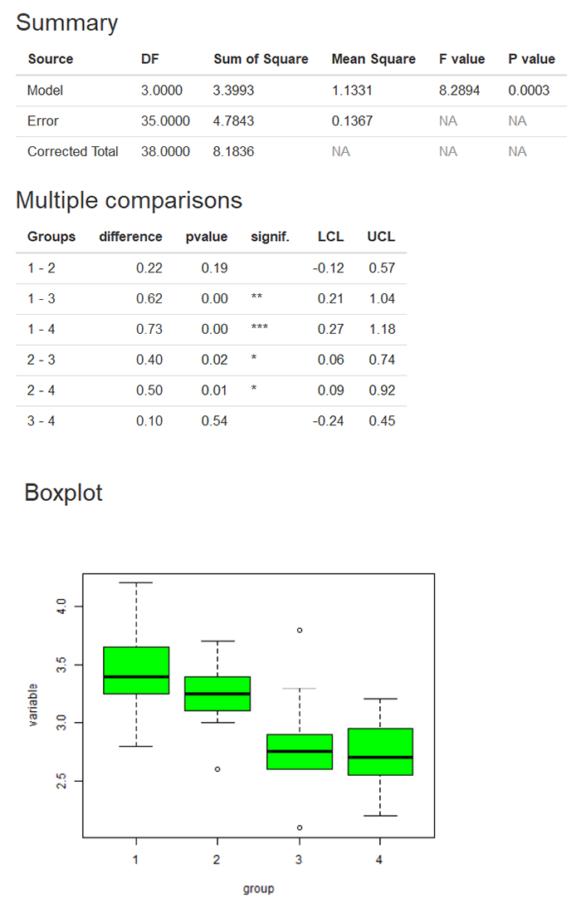

2、随机区组设计的方差分析
二、数据格式


注：
1、数据格式为“.csv”
2、数据变量名必须为英文、阿拉伯数字或下划线的组合
3、只有当选择随机区组设计时（Randomized block design）时才需要填入区组变量（Block variable）
4、指标变量（Explanatory variable）可以输入多列，以英文状态下的逗号或冒号分隔，如：2,3,4或2:4
示例如下：
